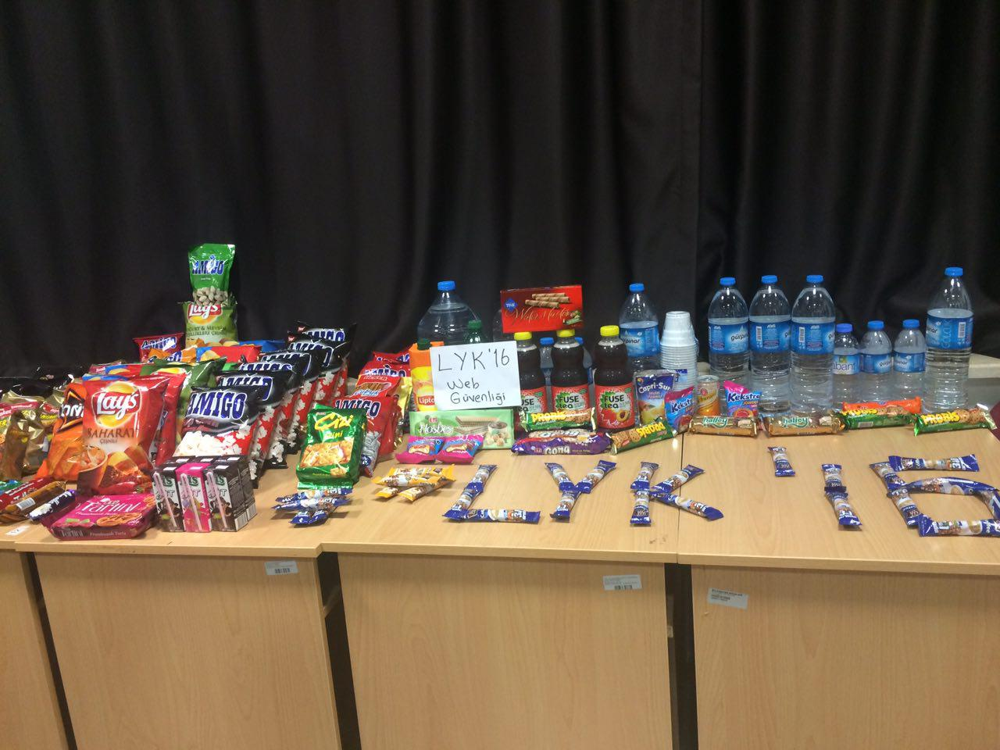
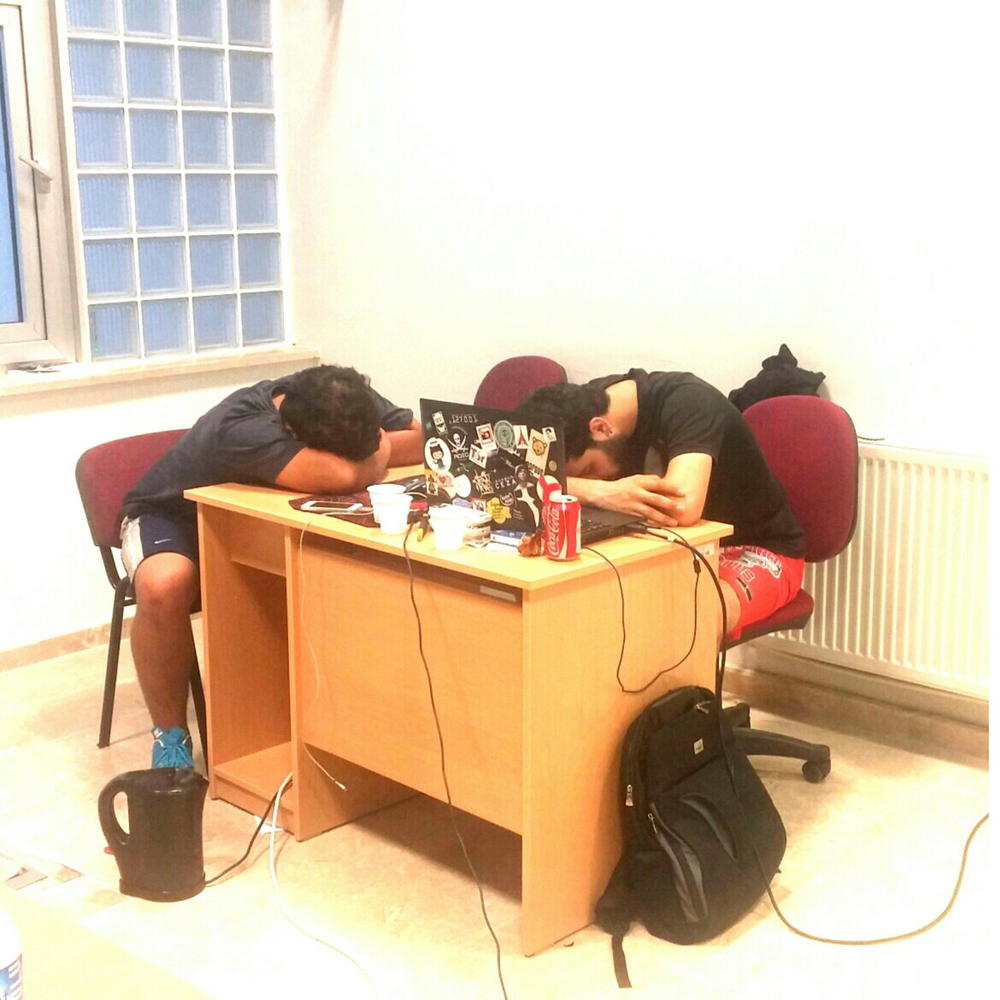
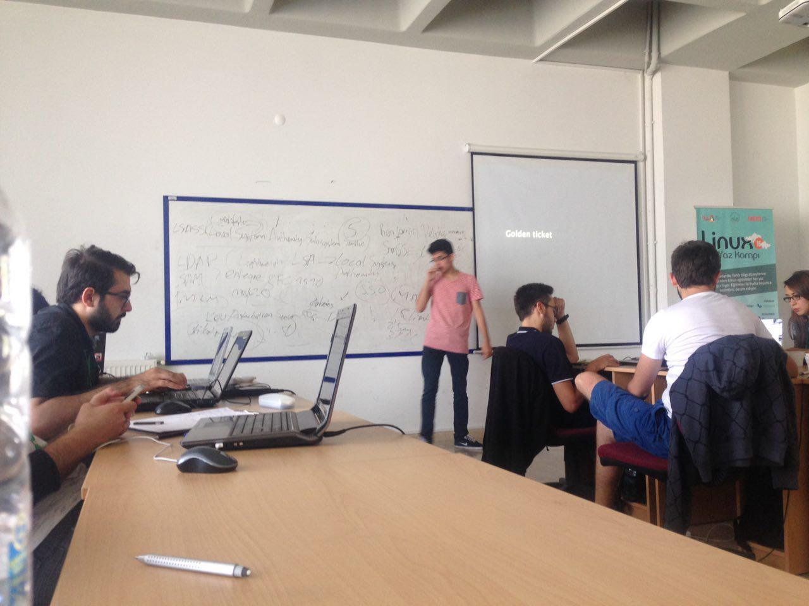
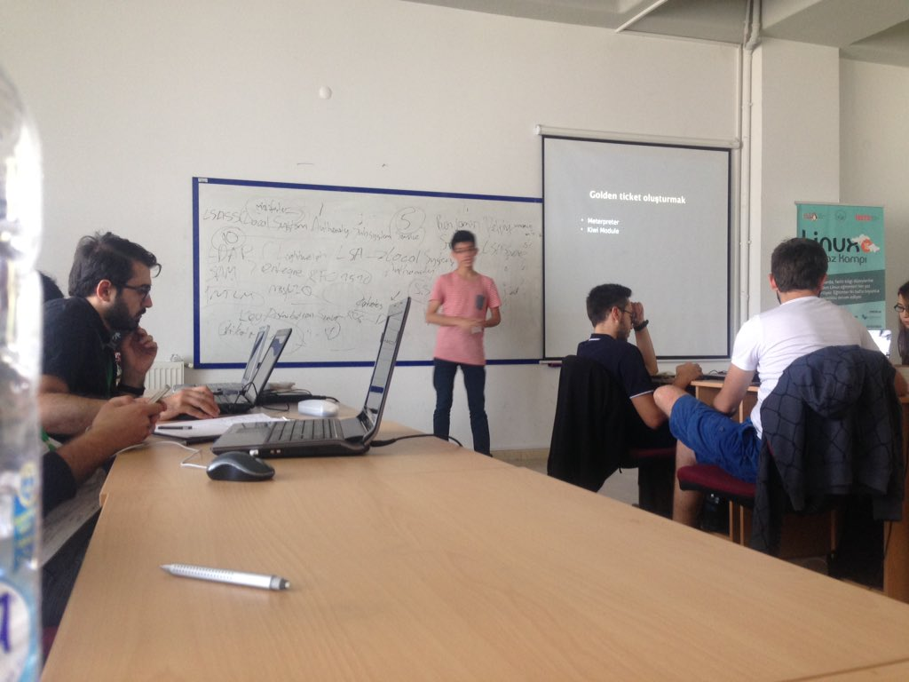
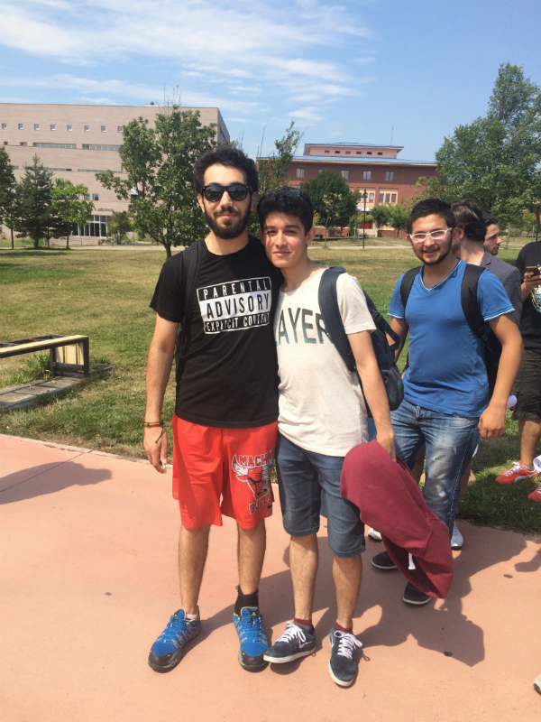

Nasıl bir giriş yapmam gerektiğini bilmiyorum. Çünkü bu benim ilk blog yazım. Uzun süredir açmak istiyordum fakat fırsat bulamamıştım. İlk blog yazım kamp hakkında olacakmış. Geçen sene Linux Yaz Kamp'ında 'Linux Sistem Yönetimi' eğitimine katılmıştım. Kampın en küçüklerinden biri olarak oldukça verimli bir süreç geçirdim. Orada tanıştığım yaşıma aldırmadan benimle yaşıtları gibi sohbet eden kişilerle hala görüşüyorum. Bu sene ise kampa katılıp katılmama konusunda kararsızdım. Lise 3’e geçecek olmam nedeniyle acaba o 15 gün ders mi çalışmalıyım? Düşüncesi vardı tabii. Ama katılmaya karar verdim. Sızma Testi ve Web Uygulama Güvenliği kurslarına başvurdum. İkinci başvurum olan Web Uygulama Güvenliği kursu için bir sınav yapıldı. Çözdüm, sonuç olarak ise seçildim.
İlk günden son güne 09.30 , 21.30 arası durmaksızın ders işledik. Sınıfa geç gelenlerden para toplama görevi bana verilmişti. Son hafta baklava alacaktık ^^ Daha sonra ise BaklavaCMS’imizi yazdık! Ve yazdığımız sistem üzerinden toplamaya devam ettik.
Ömer Hoca ve Murat Hoca kamp boyunca yılmadan bize bir şeyler anlatma çabası içerisindeydiler. Kampta bir gün ara veriliyor. O gün genelde Bolu içerisinde gezi düzenleniyor. Biz ise gezmek yerine sınıf olarak sabahlamaya karar verdik! Bizim için çok güzel bir CTF hazırlanmıştı. Artık şov yapacaktık ;) Yiyeceklerimizi de unutmadık tabii ki.

Fakat sanırım hocalarımızı biraz fazla yormuşuz ^^ Yaklaşık saat 1 gibi biraz kestirdiler…
Gece 03.30 gibi Ömer Hoca bizim için sucuk ekmek almaya da gitti ^^ ( Ne kadar fedakar bir eğitmen olduğundan bahsetmeme gerek yok sanırım :)) Sabah 7.30 gibi CTF’i bitirip dağılmaya karar verdik. Fakat belirli bir saate kadar kampüs içerisinden ulaşım sağlanmıyormuş. Tabi biz hemen meşhur korsan taksicimizi aradık. Bize büyük bir otobüs gönderdi. Kampta en eğlendiğim gün şüphesiz sabahladığımız gün olabilir.
Artık konuları neredeyse tamamlamıştık. İsteyen güvenlikle alakalı istediği bir konuya hazırlanıp anlatabilirdi. Tabi ben hemen bir konu seçip bir sonraki gün anlatmak için Ömer Hoca’yı sıkıştırdım :) Daha öncesinde Merve ile beraber sınıfta TCP/IP anlatmıştık fakat çok uzun sürmemişti. Şimdi ise neredeyse yürek yemiştim! Linux Yaz Kampında Active Directory anlatacaktım! Anlattım da, önce klasik sızma testleri nedir ne değildir ile başlayıp canlı canlı ele geçirdiğimiz bir sistemde post exploitation’a kadar anlatmaya çalıştım.

Sınıfça malware bile oluşturduk. Active Directory’e yönelik yapılan birkaç saldırı üzerinde durdum. Yaklaşık 2 saat süren benim açımdan verimli geçen bir sunumdu. Öğrendiğim diğer bir şey de yazımın çok kötü olmasıydı.

XSSfinder da yazdık. Bence oldukça kullanışlı oldu.
Son gün ise Ömer Hoca ve Murat Hoca’ya drone hediye ettik ^^ Nasıl çalıştığını anlamadan uçurmaya kalkıştık… En son tüm sınıf kampüse dağılmış kayıp drone’u arıyorduk. Biraz zorlanmamıza rağmen bulabildik. Sebebi de malum "man drone" O zamaan RTFM! diyerek postumuzu burada bitirelim. Seneye de gelmeye çalışacağım. Görüşmek üzere ♥
